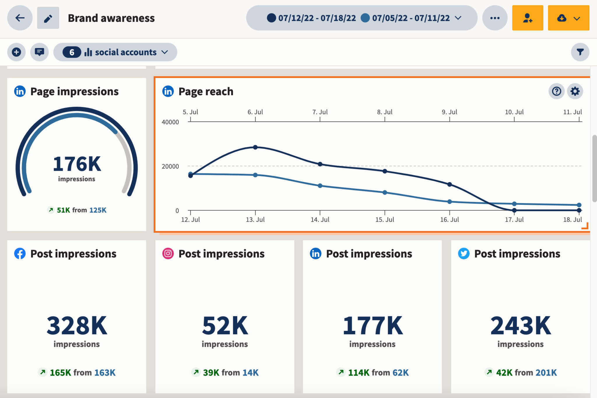

Home Page
Social Media Management - What is it?
Social media management refers to the process of creating, scheduling, analyzing, and engaging with content posted on social media platforms, such as Facebook, Twitter, Instagram, LinkedIn, and others. It involves developing and implementing strategies to effectively communicate with an audience, build brand awareness, drive traffic, and ultimately achieve business goals.
Why hire a Social Media Manager?
In a world where social media is the most powerful marketing tool, you want to ensure that your business has a prevalent online presence. There are 4 main reasons why you would want to hire a Social Media Manager to achieve this.
- You don't have enough time on your hands.
- You struggle to understand social media.
- You want to increase your engagement.
- You no longer enjoy it.